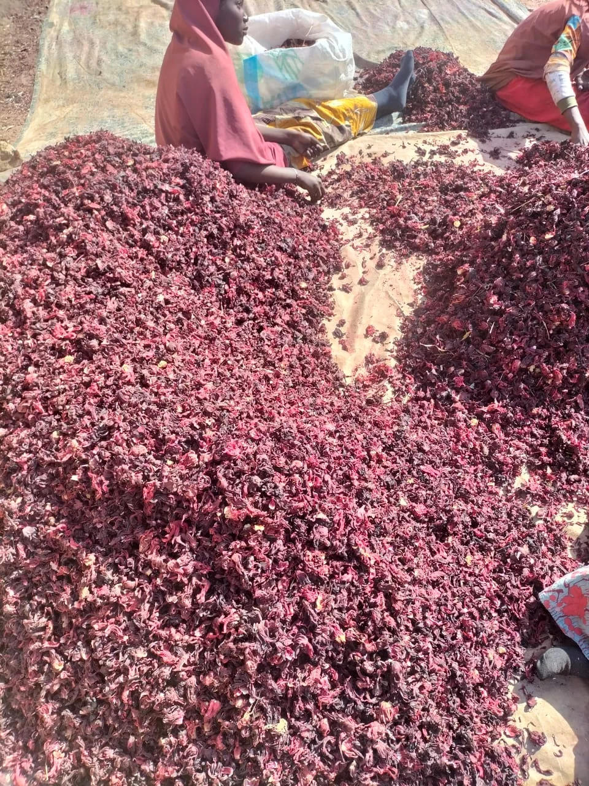

Dried calyces
Roselle is commonly traded as dried red calyces; confirm the actual form and species for the lot.
PRODUCT 02 · AFRICAN SOURCING
Dried roselle material for beverage, tea, and food-ingredient discussions, matched to the buyer’s required form and market.
Origin in Biocot’s supplied brief: African sourcing opportunities. Exact country and growing area are confirmed for each lot.

Roselle is commonly traded as dried red calyces; confirm the actual form and species for the lot.
Potential uses include infusions, beverage blends, and selected food-processing applications.
Origin, grade, cut, moisture, packaging, and available documents depend on the lot.
In export and ingredient discussions, “Hibiscus flower” often refers to the dried fleshy calyx of roselle (Hibiscus sabdariffa), rather than only the petals. The actual material in a shipment must be checked against its product description and supplier documents.
Roselle calyces are used in drinks and tea infusions, and may also be used in syrups, jams, and other food applications. The best form depends on the buyer’s recipe, processing equipment, market rules, and required specification. This page makes no health or therapeutic claims.
Biocot’s supplied portfolio describes Hibiscus as an African sourcing opportunity. The specific source country, growing area, harvest, and lot need to be verified before they are stated as product facts.

Exact quality parameters and transport arrangements must be agreed for the selected lot and destination.
Confirm species, origin, cut, grade, moisture and cleanliness requirements with a sample or lot-specific documents.
Set a suitable clean, sealed pack format and handling plan that protects the dried product from moisture and contamination.
Agree freight mode, destination, schedule, export documents, and delivery terms in the written quotation or contract.
READY TO DISCUSS THIS PRODUCT?
Share your target quantity, intended use, destination, and required product documents.